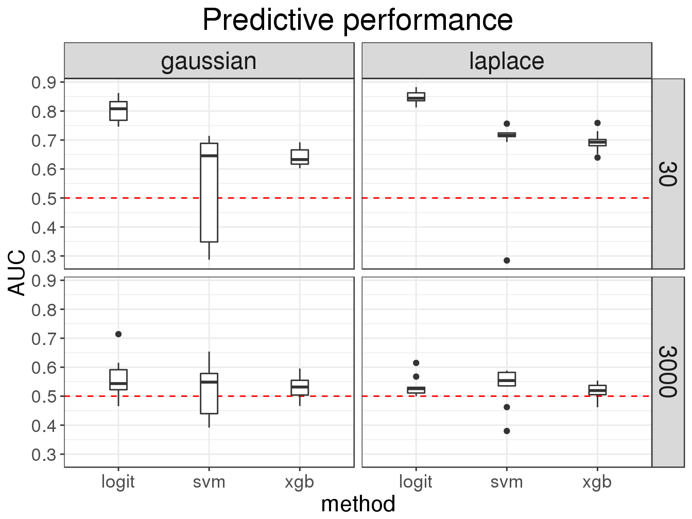

Analysis results in a consistent data structure
Florian Privé
October 21, 2017
How do you store results of an analysis?
When you have different parameters that are varying, when you compare many methods and when you want to keep all the results of an analysis, your code can become quite complex.
In this tutorial, we’ll make a comparison of machine learning methods for predicting disease based on small SNP data. We’ll show how to use the tidyverse set of packages to make the analysis easier by using consistent data structures and functional programming. We’ll use tibbles with list-columns.
A simulation made easy
Data
Let’s use some 1000 Genomes data from Gad Abraham’s GitHub repository which have been filtered and quality-controled.
library(tidyverse)## Loading tidyverse: ggplot2
## Loading tidyverse: tibble
## Loading tidyverse: tidyr
## Loading tidyverse: readr
## Loading tidyverse: purrr
## Loading tidyverse: dplyr## Conflicts with tidy packages --------------------------------------------------------## filter(): dplyr, stats
## lag(): dplyr, statstmpfile <- tempfile()
base <- paste0(
"https://github.com/gabraham/flashpca/raw/master/HapMap3/",
"1kg.ref.phase1_release_v3.20101123_thinned_autosomal_overlap")
exts <- c(".bed", ".bim", ".fam")
map2_int(paste0(base, exts), paste0(tmpfile, exts), ~download.file(.x, .y))## [1] 0 0 0library(bigsnpr)## Loading required package: bigstatsrrdsfile <- snp_readBed(paste0(tmpfile, ".bed"), tempfile())
bigsnp <- snp_attach(rdsfile)
G <- bigsnp$genotypes
obj.svd <- snp_autoSVD(G, bigsnp$map$chromosome, bigsnp$map$physical.pos, ncores = 2)## Phase of clumping at r2 > 0.2.. keep 14079 SNPs.
##
## Iteration 1:
## Computing SVD..
##
## Converged!# Matrix of genotypes and first 10 PCs
X <- cbind(G[], obj.svd$u)Methods’ functions
library(tidyverse)Each method’s function returns a tibble (data frame) with 4 columns:
- the name of the method,
- the predictive scores and true phenotypes for the test set, as a list-column,
- the timing of the main computations (in seconds),
- the number of SNPs used for the prediction.
logit <- function(X, y, ind.train, ind.test) {
timing <- system.time({
train <- glmnet::cv.glmnet(X[ind.train, ], y[ind.train], type.measure = "auc",
family = "binomial", alpha = 0.5)
preds <- predict(train, X[ind.test, ])
})[3]
tibble(
method = "logit",
eval = list(cbind(preds, y[ind.test])),
timing = timing,
nb.preds = sum(glmnet::coef.cv.glmnet(train) != 0)
)
}svm <- function(X, y, ind.train, ind.test) {
timing <- system.time({
train <- LiblineaR::LiblineaR(X[ind.train, ], y[ind.train], type = 5)
preds <- predict(train, X[ind.test, ], decisionValues = TRUE)
})[3]
tibble(
method = "svm",
eval = list(cbind(1 - preds$decisionValues[, 1], y[ind.test])),
timing = timing,
nb.preds = sum(train$W != 0)
)
}xgb <- function(X, y, ind.train, ind.test) {
timing <- system.time({
train <- xgboost::xgboost(data = X[ind.train, ], label = y[ind.train],
nrounds = 10, max_depth = 3, eta = 1,
objective = "binary:logistic",
verbose = FALSE, save_period = NULL)
preds <- predict(train, X[ind.test, ])
})[3]
tibble(
method = "xgb",
eval = list(cbind(preds, y[ind.test])),
timing = timing,
nb.preds = nrow(xgboost::xgb.importance(model = train))
)
}Simulation of phenotypes
get_pheno <- function(
G, ## matrix of genotypes
h2, ## heritability
M, ## nbs of causal variants
effects.dist = c("gaussian", "laplace"), ## distribution of effects
K = 0.3 ## prevalence
) {
effects.dist <- match.arg(effects.dist)
set <- sample(ncol(G), size = M)
effects <- `if`(effects.dist == "gaussian",
rnorm(M, sd = sqrt(h2 / M)),
rmutil::rlaplace(M, s = sqrt(h2 / (2*M))))
y.simu <- scale(G[, set]) %*% effects
y.simu <- y.simu / sd(y.simu) * sqrt(h2)
stopifnot(all.equal(drop(var(y.simu)), h2))
y.simu <- y.simu + rnorm(nrow(G), sd = sqrt(1 - h2))
# Liability Threshold Model (LTM)
pheno <- as.numeric(y.simu > qnorm(1 - K))
}Simulations
First, we use expand.grid to create a data frame with all possible combination of parameters we compare.
results <- expand.grid(
M = c(30, 3000),
dist = c("gaussian", "laplace"),
num.simu = 1:10,
stringsAsFactors = FALSE
) %>%
as_tibble() %>%
print()## # A tibble: 40 x 3
## M dist num.simu
## <dbl> <chr> <int>
## 1 30 gaussian 1
## 2 3000 gaussian 1
## 3 30 laplace 1
## 4 3000 laplace 1
## 5 30 gaussian 2
## 6 3000 gaussian 2
## 7 30 laplace 2
## 8 3000 laplace 2
## 9 30 gaussian 3
## 10 3000 gaussian 3
## # ... with 30 more rowsThen, we use package purrr to add a new column to the data frame with all the results. The main condition for a data frame is that each column has the same number of elements. So, by using lists, we can basically store any types of data in a data frame. For example, in column "eval" we store matrices, this is called a list-column. In the newly-created column "res", we store data frames! We use tibbles instead of standard data frames because they print better.
results[["res"]] <- pmap(results, function(M, dist, num.simu) {
cat(".")
y <- get_pheno(X, 0.8, M, dist)
n <- nrow(X)
ind.train <- sort(sample(n, size = 500))
ind.test <- setdiff(1:n, ind.train)
bind_rows(
logit(X, y, ind.train, ind.test),
svm(X, y, ind.train, ind.test),
xgb(X, y, ind.train, ind.test)
)
})## ........................................results## # A tibble: 40 x 4
## M dist num.simu res
## <dbl> <chr> <int> <list>
## 1 30 gaussian 1 <tibble [3 x 4]>
## 2 3000 gaussian 1 <tibble [3 x 4]>
## 3 30 laplace 1 <tibble [3 x 4]>
## 4 3000 laplace 1 <tibble [3 x 4]>
## 5 30 gaussian 2 <tibble [3 x 4]>
## 6 3000 gaussian 2 <tibble [3 x 4]>
## 7 30 laplace 2 <tibble [3 x 4]>
## 8 3000 laplace 2 <tibble [3 x 4]>
## 9 30 gaussian 3 <tibble [3 x 4]>
## 10 3000 gaussian 3 <tibble [3 x 4]>
## # ... with 30 more rowsResults
First, we use function unnest of package tidyr so that we have a tidier data frame. To learn more about tidy data, please refer to this vignette and this book chapter.
(results <- unnest(results, res))## # A tibble: 120 x 7
## M dist num.simu method eval timing nb.preds
## <dbl> <chr> <int> <chr> <list> <dbl> <int>
## 1 30 gaussian 1 logit <dbl [592 x 2]> 20.200 19
## 2 30 gaussian 1 svm <dbl [592 x 2]> 2.017 1035
## 3 30 gaussian 1 xgb <dbl [592 x 2]> 1.771 67
## 4 3000 gaussian 1 logit <dbl [592 x 2]> 18.580 10
## 5 3000 gaussian 1 svm <dbl [592 x 2]> 1.707 1187
## 6 3000 gaussian 1 xgb <dbl [592 x 2]> 1.626 68
## 7 30 laplace 1 logit <dbl [592 x 2]> 15.834 9
## 8 30 laplace 1 svm <dbl [592 x 2]> 1.649 1091
## 9 30 laplace 1 xgb <dbl [592 x 2]> 1.322 64
## 10 3000 laplace 1 logit <dbl [592 x 2]> 16.811 3
## # ... with 110 more rowsTo compute the AUC (a measure of prediction accuracy), we use purrr again and specify the type of the output we want (_dbl for doubles). Here, we could use function mutate of package dplyr instead of standard accessor [[.
results[["AUC"]] <- map_dbl(results[["eval"]], ~bigstatsr::AUC(.x[, 1], .x[, 2]))
results## # A tibble: 120 x 8
## M dist num.simu method eval timing nb.preds AUC
## <dbl> <chr> <int> <chr> <list> <dbl> <int> <dbl>
## 1 30 gaussian 1 logit <dbl [592 x 2]> 20.200 19 0.8563973
## 2 30 gaussian 1 svm <dbl [592 x 2]> 2.017 1035 0.6828651
## 3 30 gaussian 1 xgb <dbl [592 x 2]> 1.771 67 0.6250210
## 4 3000 gaussian 1 logit <dbl [592 x 2]> 18.580 10 0.7140415
## 5 3000 gaussian 1 svm <dbl [592 x 2]> 1.707 1187 0.6539634
## 6 3000 gaussian 1 xgb <dbl [592 x 2]> 1.626 68 0.5577844
## 7 30 laplace 1 logit <dbl [592 x 2]> 15.834 9 0.8441696
## 8 30 laplace 1 svm <dbl [592 x 2]> 1.649 1091 0.7119032
## 9 30 laplace 1 xgb <dbl [592 x 2]> 1.322 64 0.7027520
## 10 3000 laplace 1 logit <dbl [592 x 2]> 16.811 3 0.5090266
## # ... with 110 more rowsNow, let’s get some summaries of the results with package dplyr.
results %>%
group_by(M, dist, method) %>%
summarise_at(c("timing", "nb.preds", "AUC"), mean)## # A tibble: 12 x 6
## # Groups: M, dist [?]
## M dist method timing nb.preds AUC
## <dbl> <chr> <chr> <dbl> <dbl> <dbl>
## 1 30 gaussian logit 16.7186 24.4 0.8047693
## 2 30 gaussian svm 1.6179 1083.6 0.5368827
## 3 30 gaussian xgb 1.3670 65.3 0.6417739
## 4 30 laplace logit 15.9369 10.7 0.8460125
## 5 30 laplace svm 1.6222 1138.2 0.6764060
## 6 30 laplace xgb 1.3339 63.1 0.6934731
## 7 3000 gaussian logit 17.2041 7.1 0.5594812
## 8 3000 gaussian svm 1.5931 1166.1 0.5188196
## 9 3000 gaussian xgb 1.3196 67.8 0.5302460
## 10 3000 laplace logit 17.0658 4.1 0.5318777
## 11 3000 laplace svm 1.6391 1170.6 0.5361078
## 12 3000 laplace xgb 1.3428 68.3 0.5151852Visualise results
Finally, let’s use package ggplot2, also part of the tidyverse, to plot the results.
# Wrapper to use my own theme
myggplot <- function(...) bigstatsr:::MY_THEME(ggplot(...))myggplot(results) +
geom_boxplot(aes(method, timing)) +
scale_y_continuous(breaks = seq(0, 20, 2)) +
facet_grid(M ~ dist) +
theme(strip.text.x = element_text(size = rel(2)),
strip.text.y = element_text(size = rel(2))) +
ggtitle("Timings")
myggplot(results) +
geom_hline(yintercept = 0.5, color = "red", linetype = 2) +
geom_boxplot(aes(method, AUC)) +
scale_y_continuous(breaks = 0:10 / 10) +
facet_grid(M ~ dist) +
theme(strip.text.x = element_text(size = rel(2)),
strip.text.y = element_text(size = rel(2))) +
ggtitle("Predictive performance")
Conclusion
The main point of using tibbles to store results is that you have the inputs, raw outputs and transformed outputs in the same data structure. Moreover, this data structure contains information that are easy to manipulate and visualize. Finally, note that we didn’t use a single loop in the whole method comparison.
The tidyverse set of packages is very convenient and consistent. You can learn more by reading book R for Data Science, freely available online.